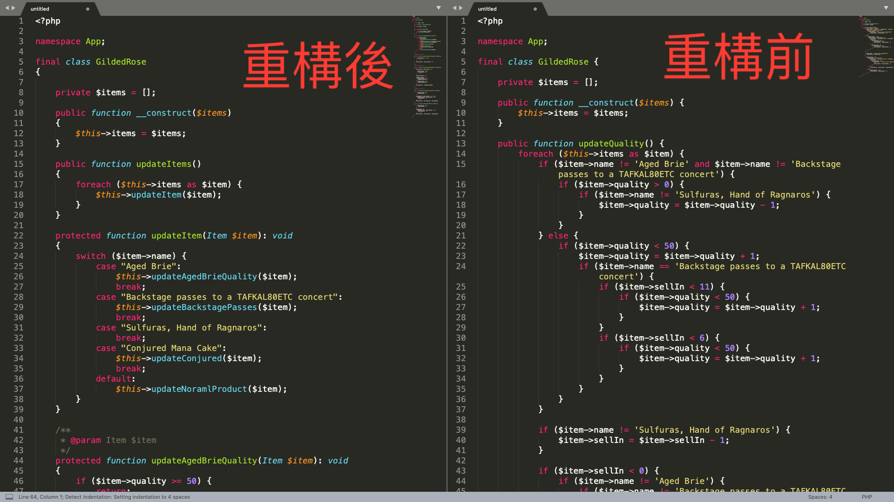
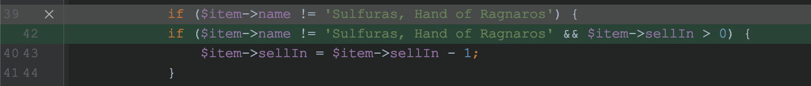
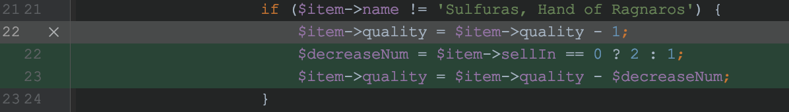
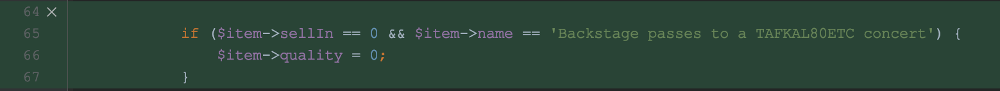
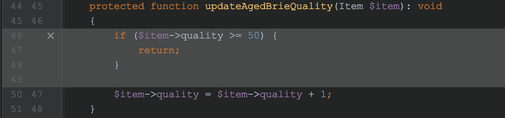

這篇逐步介紹自己練習重構與 TDD 開發 Legacy Code Kata 的解題思路，題目是社群 Domain Driven Design(DDD Taiwan) 所舉辦的讀書會 Legacy Code 讀書會 3rd (Ch 8, 9) 所分享的重構練習題目。
GildedRose Refactoring Kata
另外感謝這次的講者 Blues 與社群用心的準備，自己蠻喜歡這次的題目，這次重構時決定嘗試做一次筆記，對自己還是很有收穫的，未來如果自己舉辦公司讀書會的話，將本題作為練習題也是非常適合。
legacy code 重構前後

開發流程
- 按照預期完成的測試案例項目撰寫程式碼
- 重構 legacy code
- TDD 新增新的需求
- (補充)修正測試案例五漏洞
題目描述
嗨，歡迎來到鍍金玫瑰團隊。如您所知，我們是一家小旅館，位於一線城市的黃金地段，旅館老闆是艾里森(Allison)。我們只銷售高級商品。不過每件商品都有一個銷售剩餘天數。
隨著時間的推移，商品的品質會不斷下降。
我們擁有一個可以更新庫存訊息的系統。有位名叫 River 的開發人員開發了這個系統，之後就離開了。
你的任務是將新功能添加到該系統中，以便我們可以開始銷售新種類的商品。
題目原始需求
- 所有商品(item)都有一個銷售剩餘天數(SellIn)值，表示該商品必須在該值所代表的天數內銷售出去。
- 所有商品都有一個品質(Quality)值，表明該商品當前的品質。
- 每天結束時，系統會降低每個商品的上述兩個值。
- 一但商品過了銷售剩餘天數之後還沒未賣出，那麼其每日品質下降的速度就會加倍。
- 商品的品質不能為負數。
- 陳年乾酪(Aged Brie)的品質值隨著時間的推移，不減反增。
- 商品的品質的上限為50。
- 魔法錘(Sulfuras)是一個傳奇商品，其銷售剩餘天數和品質都不會變化。
- 劇院後台通行證(Backstage passes)，就像陳年乾酪一樣，其品質會隨著銷售剩餘天數的減少而提高-當離演出開始不到10天時，品質每日提高2；當不到5天時，品質值每日提高3，當演出結束後，品質歸0。
- (新需求)：魔法(Conjured)商品每日品質下降速度是正常商品的2倍
在擁有系統的需求之後，首先要做的便是將消化此需求，並轉為實務開發的測試案例，有了測試案例之後，即可依照測試案例開始來撰寫測試的程式碼。
預期完成的測試案例項目
- 原需求 3：確保一般的商品在每天結束後 ( 也就是
updateQuality的 method 呼叫之後 )，系統會降低sellIn和quality兩種屬性，降低的程度由原程式碼所決定。 - 原需求 5：確保
item的quality從不為負數 - 原需求 4 ：確保
item的sellIn為零時，若quality還不等於零，其下降速度是原本的兩倍 - 原需求 6：商品 Aged Brie 的物件
item，經過updateQuality呼叫之後，其quality不減反增，即使在sellIn歸零也是 - 原需求 7 ： 確保
item的quality從來不超過 50 - 原需求 8：商品 Sulfuras 的物件
item，其sellIn和quality初始化後，永久不變 - 原需求 9：商品 Backstage passes 的物件
item須滿足下列條件：- 當
sellIn為 9 到 5 的時候，updateQuality一次提升quality2 - 當
sellIn為 4 到 1 的時候，updateQuality一次提升quality3 - 當
sellIn為 0，quality將直接歸零
- 當
- 原需求 10 ：新增一個 Conjured 商品，
updateQuality所下降的值為正常商品的兩倍
這裡想補充幾點：
- 上述的需求中，如果有較描述模糊的地帶，這裏傾向先自己推理與腦補，實務上最好還是跟 PM 或客戶確認需求，避免雙方預期需求上的認知差異。
- 程式碼所使用的商品名稱來源是：
fixtures/texttest_fixture.php以及src/GildedRose，例如：- 商品名稱：
Backstage，在程式碼實際上名稱為Backstage passes to a TAFKAL80ETC concert
- 商品名稱：
- 撰寫測試案例的流程，盡可能地將有關聯性的測試案例安排在一起先行撰寫，使後續撰寫測試程式碼時，也可避免出現不必要的修改。
按照預期完成的測試案例項目撰寫程式碼
測試案例一
- 需求：確保一般的商品在每天結束後 ( 也就是
updateQuality的 method 呼叫之後 )，系統會降低sellIn和quality兩種屬性，降低的程度由原程式碼所決定。
既然我們已經擁有明確的測試案例以及需求了，接下來便是按照需求逐步完成測試，開啟預設的測試檔 GildedRoseTest，會看到下面這個 method：
public function testFoo()
{
$items = [new Item("foo", 0, 0)];
$gildedRose = new GildedRose($items);
$gildedRose->updateQuality();
$this->assertEquals("fixme", $items[0]->name);
}接下來先進行基本的撰寫測試與重構，這裡開始描述實際撰寫測試的流程：
實際撰寫測試的流程
- 修改
testFoomethod 名稱為testNormalProductUpdateQuality方便理解這個測試案例的情境。 - 執行測試，發現紅燈：
Failed asserting that two strings are identical - 修改
item的quality以及sellIn為 1 ，滿足測試。 - 修正第一個
assertEquals中第一個參數的fixme為foo，並且調整assertEquals為assertSame，確保較嚴謹的判斷。 - 新增一個
assertEquals來測試quality是否如預期下降 1， 為什麼是 1 呢？這個數字是從查看物件GildedRose裡面得知的，需求裡面沒有提到這一塊所以就沿用原設計。 - 新增一個
assertEquals來測試sellIn是否如預期下降 1，原因如上 - 執行測試，綠燈。
最後完成如下：
public function testNormalProductUpdateQuality()
{
$item = new Item("foo", 1, 1);
$items = [$item];
$gildedRose = new GildedRose($items);
$gildedRose->updateQuality();
$this->assertSame("foo", $item->name);
$this->assertSame(0, $item->sellIn);
$this->assertSame(0, $item->quality);
}再來便是重構測試程式碼的流程，首先重構 GildedRoseTest：
- extract
new Item("foo", 0, 0)到 property，確保 IDE 可以取得存取的變數來源是什麼型別。 - 重構使用到
item物件的程式碼。 - extract 測試目標的
item到GildedRoseTest上，以便滿足後續測試時需要將參數一一帶入至測試的 method - extract 測試方法
shouldBe，減少之後重複的程式碼 - 補足 PHPDoc 或是強型別 ，確保 IDE(PHPStorm) 知道每一個物件的型別為何。
最後完成如下：
class GildedRoseTest extends TestCase
{
/** @var Item */
private $item;
public function testNormalProductUpdateQuality()
{
$this->item = new Item("foo", 1, 1);
$items = [$this->item];
$gildedRose = new GildedRose($items);
$gildedRose->updateQuality();
$this->assertSame("foo", $this->item->name);
$this->shouldBe(0, 0);
}
protected function shouldBe(int $sellIn, int $quality): void
{
$this->assertSame($sellIn, $this->item->sellIn);
$this->assertSame($quality, $this->item->quality);
}
}在重構完之後，再次執行測試，確認綠燈後便完成第一個測試案例，準備提交。
測試案例二
- 需求：確保
item的quality從不為負數
實際撰寫測試的流程
- 新增測試 method
testProductQualityOrSellInIsNeverBeLessThenZero - 複製 測試案例一 的程式碼，並將
sellIn以及quality改為 0，預期這兩個屬性在updateQuality之後，仍然為 0 - 執行測試，發現紅燈：
Failed asserting that -1 is identical to 0，這是quality的錯誤。 - 修正
GildedRose物件的程式碼滿足測試，修改的程式碼如下：

- 執行測試，綠燈，完成如下：
public function testProductQualityOrSellInIsNeverBeLessThenZero()
{
$this->item = new Item("foo", 0, 0);
$items = [$this->item];
$gildedRose = new GildedRose($items);
$gildedRose->updateQuality();
$this->shouldBe(0, 0);
}開始重構測試程式碼
- 在
GildedRose的屬性items新增 PHPDoc ，使 PHPStorm 可以讀取來源：
/** @var Item[] */
private $items = [];- extract 建立
GildedRose的那一段程式碼 extract 到一個新的 method 為updateQuality，常用的程式碼以便之後重複使用：
protected function updateQuality(): void
{
$items = [$this->item];
$gildedRose = new GildedRose($items);
$gildedRose->updateQuality();
}- extract 建立
Item的邏輯下面這一個 method，一樣是為了使常用的程式碼能重複使用 ：
protected function createItem(string $name, int $sellIn, int $quality)
{
$this->item = new Item($name, $sellIn, $quality);
}- 執行測試，綠燈，完成的程式碼如下：
public function testNormalProductUpdateQuality()
{
$this->createItem("foo", 1, 1);
$this->updateQuality();
$this->assertSame("foo", $this->item->name);
$this->shouldBe(0, 0);
}
public function testProductQualityOrSellInIsNeverBeLessThenZero()
{
$this->createItem("foo", 0, 0);
$this->updateQuality();
$this->shouldBe(0, 0);
}測試案例三
- 需求：確保
item的sellIn為零時，若quality還不等於零，其下降速度是原本的兩倍
實際撰寫測試的流程
- 新增測試 method
testProductQualityDecreaseDoubleWhenSellInIsZero - 初始化商品的
sellIn為 0 ，然後quality為 2 - 撰寫測試，預期在
updateQuality之後，quality為 0 - 執行測試，發現紅燈：
Failed asserting that 1 is identical to 0.，看來原本的設計是沒有撰寫這一部分邏輯 - 補足需求：
sellIn為零時，若quality還不等於零，其下降速度是原本的兩倍，修改GildedRose程式碼如下：

- 執行測試，綠燈
public function testProductQualityDecreaseDoubleWhenSellInIsZero()
{
$this->createItem("foo", 0, 2);
$this->updateQuality();
$this->shouldBe(0, 0);
}測試案例四
- 需求：商品 Aged Brie 的物件
item，經過updateQuality呼叫之後，其quality不減反增，即使在sellIn歸零也是
實際撰寫測試的流程
- 新增測試 method
testAgedBrieUpdateQualityIsAlwaysIncrease - 初始化商品的
sellIn為 0 ，然後quality為 2，這裡的名稱改為Aged Brie - 撰寫測試，預期在
updateQuality之後，quality為 3 - 執行測試，綠燈
public function testAgedBrieUpdateQualityIsAlwaysIncrease()
{
$this->createItem("Aged Brie", 0, 2);
$this->updateQuality();
$this->shouldBe(0, 3);
}測試案例五
- 需求： 確保
item的quality從來不超過 50
這一個案例想補充一下，按理來說應該可以測試兩個地方：
- 初始化
item的時候quality就不允許 50 以上的參數 - 新增
quality的時候，到達 50 就不給予新增
由於初始化不允許 50 以上的參數處理有兩種，要嘛自動降為 50 ，要嘛拋出 Exception ，但這裏題目也沒特別提到，我選擇自己腦補拋出 Exception。
實際撰寫測試的流程：
- 新增一個
InvalidItemQualityExceptionException 物件在src目錄 - 修改
Item物件的__constructmethod 如下
function __construct($name, $sellIn, $quality)
{
if($quality > 50){
throw new InvalidItemQualityException();
}
$this->name = $name;
$this->sellIn = $sellIn;
$this->quality = $quality;
}- 新增測試 method
testProductQualityNeverGreaterThen_51 - 建立一個
quality為 51 的Item，並且預期拋出一個InvalidItemQualityException的 Exception - 執行測試，綠燈
- 建立一個
Aged Brie的物件，quality為 50 - 撰寫測試，預期在
updateQuality之後，quality仍然為 50 - 執行測試，綠燈
public function testProductQualityNeverGreaterThen_51()
{
$this->expectException(InvalidItemQualityException::class);
$this->createItem("foo", 0, 51);
$this->createItem("Aged Brie", 0, 50);
$this->updateQuality();
$this->shouldBe(0, 50);
}測試案例六
- 需求：魔法槌商品的物件
item，其sellIn和quality初始化後，永久不變
實際撰寫測試的流程：
- 新增測試 method
testSulfurasSellInQuality - 建立一個名稱為
Sulfuras, Hand of Ragnaros的Item，sellIn和quality為 3 - 撰寫測試，預期在
updateQuality之後，sellIn和quality仍然為 3 - 執行測試，綠燈
public function testSulfurasSellInQuality()
{
$this->createItem("Sulfuras, Hand of Ragnaros", 3, 3);
$this->updateQuality();
$this->shouldBe(3, 3);
}測試案例七
- 需求：商品 Backstage passes 的物件
item須滿足下列條件：- 當
sellIn為9到6的時候，updateQuality一次提升quality2 - 當
sellIn為5到1的時候，updateQuality一次提升quality3 - 當
sellIn為0，quality將直接歸零
- 當
這邊標題雖然打測試案例七，但實際上是增加 3 個測試案例，皆是針對 Backstage 商品的。
實際撰寫測試的流程：
測試案例七之一 ： 當 sellIn 為 9 到 6 的時候，updateQuality 一次提升 quality 2
- 新增測試 method
testBackstagePassesQualityWhenSellInIsLessThanTenDay - 建立一個名稱為
Sulfuras, Hand of Ragnaros的Item，sellIn為 9 和quality為 0 - 測試在
sellIn為 9 ~ 6 的時候，每次updateQuality都會新增 2 - 執行測試，綠燈
public function testBackstagePassesQualityWhenSellInIsLessThanTenDay()
{
$expectedSellIn = 10;
$this->createItem("Backstage passes to a TAFKAL80ETC concert", $expectedSellIn, 0);
$exceptedQuality = 2;
$exceptedSellIns = range($expectedSellIn, 6);
foreach ($exceptedSellIns as $expectedSellIn) {
$this->updateQuality();
$expectedSellIn--;
$this->shouldBe($expectedSellIn, $exceptedQuality);
$exceptedQuality += 2;
}
}測試案例七之二 ： 當 sellIn 為 5 到 1 的時候，updateQuality 一次提升 quality 3
- 新增測試 method
testBackstagePassesQualityWhenSellInIsLessThanFiveDay，可以直接複製上一個 測試 。 - 測試在
sellIn為 5 ~ 1 的時候，每次updateQuality都會新增 3 - 執行測試，綠燈
public function testBackstagePassesQualityWhenSellInIsLessThanFiveDay()
{
$expectedSellIn = 5;
$this->createItem("Backstage passes to a TAFKAL80ETC concert", $expectedSellIn, 0);
$exceptedQuality = 3;
$exceptedSellIns = range($expectedSellIn, 2);
foreach ($exceptedSellIns as $expectedSellIn) {
$this->updateQuality();
$expectedSellIn--;
$this->shouldBe($expectedSellIn, $exceptedQuality);
$exceptedQuality += 3;
}
}測試案例七之三 ： 當 sellIn 為 0， quality 將直接歸零
- 新增測試 method
testBackstagePassesQualityIsZeroWhenSellInIsZero，可以直接複製上一個 測試 。 - 測試初始化
sellIn為 1 而quality為 30 的時候，updateQuality之後，預期quality為 0
public function testBackstagePassesQualityIsZeroWhenSellInIsZero()
{
$this->createItem("Backstage passes to a TAFKAL80ETC concert", 1, 30);
$this->updateQuality();
$this->shouldBe(0, 0);
}- 執行測試，紅燈：
Failed asserting that 33 is identical to 0. - 修改
GildedRose物件，滿足測試案例

- 執行測試，綠燈
重構 legacy code
重構波動拳程式碼的策略
我們已經完成了除了測試案例 9 的所有測試案例了，在測試的保護下我們即將對 legacy code 進行重構，也就是清除波動拳的程式碼 updateQuality 。
重構的目的是希望在保留既有的程式碼 功能 之下，優化程式碼的架構，我在處理波動拳的程式時(這題先不考慮以物件為單位分離職責的)，有自己常用的套路：
- 可以合併的 if / else 或是可 extract 成一個 method 程式便 extract，並給予一個更容易了解的命名方式
- 充分確認流程的前因後果後，以 method 的方式分離職責，並調整執行的順序。
- 扁平化 if / else 結構，在 clean code 裡面，盡量避免 if / else 裡面有過多的 if / else ，可使用
return&switch來幫助我們完成這個任務 - 調整後不忘進行測試，確保調整是安全無慮的
- 專注測試一個測試案例，保持測試案例獨立性的同時，也保留舊有的 legacy code
- 例如，將新增的 switch 放在舊有 legacy code 最前方，並專注一個
case撰寫，執行完之後便return，逐步完成所有程式碼，最後即可移除 legacy code。
- 例如，將新增的 switch 放在舊有 legacy code 最前方，並專注一個
其實本來想嘗試描述重構過程，但發現要描述整個流程過於繁瑣冗長，這裡就跳過了描述了，請直接看重構後的程式碼。
TDD 新增新的需求
需求：新增一個 Conjured 商品，updateQuality 所下降的值為正常商品的兩倍
實際撰寫測試的流程：
- TDD 的開發流程為 紅燈 → 綠燈 → 重構，所以我們先按照需求寫測試，取得第一個紅燈
- 新增一個測試 method
testConjuredUpdateQuality
public function testConjuredUpdateQuality()
{
$this->createItem("Conjured Mana Cake", 2, 20);
$this->updateItems();
$this->shouldBe(1, 18);
}
- 測試，紅燈：
Failed asserting that 2 is identical to 1. - 再來修改
GildedRose物件的updateItemmethod 來滿足需求，首先修改updateItemMethod
protected function updateItem(Item $item): void
{
switch ($item->name) {
// ...省略
case "Conjured Mana Cake":
$this->updateConjured($item);
break;
default:
$this->updateNoramlProduct($item);
}
}
- 再來處理細節
updateConjuredmethod
protected function updateConjured(Item $item): void
{
if ($item->sellIn > 0) {
$item->sellIn--;
}
$decreaseNum = 2;
if (($item->quality - $decreaseNum) < 0) {
$item->quality = 0;
return;
}
$item->quality = $item->quality - $decreaseNum;
}- 執行測試，綠燈
- 目前為止，所有的測試案例便算是完成了，在 TDD 的流程，本該是綠燈後進行重構，但程式碼看下來沒有發現需要重構的部分，所以便在此結束
修正測試案例五漏洞
- 需求： 確保商品劇院後台通行證(Backstage passes)
item的quality從來不超過 50
剛剛在整理整個筆記的時候，意外發現 測試案例五 有一個漏網之魚便是商品劇院後台通行證(Backstage passes)，所以這裡再新增一個測試案例來補足這一部分。
實際撰寫測試的流程：
- 新增測試 method
testBackstagePassesQualityNeverGreaterThen_51 - 依照 劇院後台通行證 不同的 3 種情況，新增 quality 數值，來撰寫測試，預期皆不超過 50
public function testBackstagePassesQualityNeverGreaterThen_51()
{
$this->createItem("Backstage passes to a TAFKAL80ETC concert", 15, 50);
$this->updateItems();
$this->shouldBe(14, 50);
$this->createItem("Backstage passes to a TAFKAL80ETC concert", 9, 49);
$this->updateItems();
$this->shouldBe(8, 50);
$this->createItem("Backstage passes to a TAFKAL80ETC concert", 4, 49);
$this->updateItems();
$this->shouldBe(3, 50);
}- 執行測試，紅燈：
Failed asserting that 51 is identical to 50. - 基本上寫完第一個是紅燈，再來我們調整物件
GildedRose - 這邊調整的部分較多，首先先在
updateItems的 method 新增一個新的 method
public function updateItems()
{
foreach ($this->items as $item) {
$this->updateItem($item);
$this->setItmQualityWhenTooMuch($item);
}
}
// ... 省略
protected function setItmQualityWhenTooMuch(Item $item)
{
if($item->quality > 50){
$item->quality = 50;
}
}- 這樣的設計是傾向，無論
quality怎麼加，只要超過 50 便重設至 50，這樣寫的好處是可以一次適用所有的產品，而且考量到原本的設計還會先用if檢查，兩種寫法相較之下，無疑前者的寫法更為簡潔有力。 - 所以這裏我們不忘移除掉在
updateAgedBrieQuality裡面不必要的檢查

- 執行測試，綠燈
其他參考連結
這裏順便附上讀書會其他人分享的解題思路。